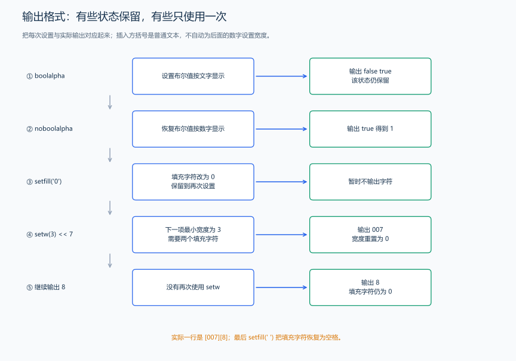

（十三） 常用标准流与输出格式
会读取整数与整行文本后，再核对题目要求怎样输出：多少位小数、是否需要补齐宽度、哪些内容属于答案。
1. 标准输入输出流
#include <iostream>
using namespace std; // 使用标准命名空间
int main() {
cout << "Hello, World!" << endl; // 输出并换行
int x;
cin >> x; // 输入
cout << "x = " << x << endl;
}也可以显式使用命名空间前缀：
// std:: 前缀明确命名空间；endl 同时换行并刷新输出流。
#include <iostream>
int main() {
std::cout << "Hello, World!" << std::endl;
}说明：
cin 是标准输入流，通常使用 >> 按类型读取；scanf 按格式字符串读取，它们的用法和缓冲机制不同。
cout 是标准输出流，通常使用 << 写出；printf 使用格式字符串，不能把两者的占位符规则混用。
endl：换行并刷新缓冲区。
2. iomanip 格式化输出
需要头文件：
// 输出精度、宽度和填充等格式控制需要此头文件。
#include <iomanip>2.1 保留小数位数（fixed + setprecision）
#include <iostream>
#include <iomanip>
using namespace std;
int main() {
double pi = 3.1415926535;
cout << fixed << setprecision(2) << pi << endl; // 3.14
cout << fixed << setprecision(4) << pi << endl; // 3.1416
}说明：
fixed << setprecision(n)：按定点格式显示小数点后 n 位。
默认浮点格式下，setprecision(n) 控制有效数字；scientific 格式下也控制小数点后的位数。
2.2 设置宽度（setw）
#include <iostream>
#include <iomanip>
using namespace std;
int main() {
int a = 42, b = 1234;
cout << setw(6) << a << endl; // 宽度为6，右对齐
cout << setw(6) << b << endl; // 字段宽度不足时自动扩展，不截断数据
}2.3 设置填充字符（setfill）
#include <iostream>
#include <iomanip>
using namespace std;
int main() {
int x = 7;
cout << setw(5) << setfill('0') << x << endl; // 00007
}2.4 综合示例
// fixed 后 setprecision 表示小数位数；setw 只作用于下一次格式化插入。
#include <iostream>
#include <iomanip>
using namespace std;
int main() {
double score = 95.6789;
cout << "默认输出: " << score << endl;
cout << "保留两位小数: " << fixed << setprecision(2) << score << endl;
cout << "宽度8，空格补齐: [" << setw(8) << 123 << "]" << endl;
cout << "宽度8，0补齐: [" << setw(8) << setfill('0') << 123 << "]" << endl;
}输出：
默认输出: 95.6789
保留两位小数: 95.68
宽度8，空格补齐: [ 123]
宽度8，0补齐: [00000123]3. 输出格式状态的保留与重置
| 设置 | 影响 | 后续是否保留 |
|---|---|---|
| fixed、scientific、defaultfloat | 浮点显示形式 | 保留，直到换模式 |
| setprecision(k) | 精度；含义取决于显示模式 | 保留 |
| setfill(ch) | 字段不足时使用的填充字符 | 保留 |
| setw(k) | 下一次相关格式化输出的字段宽度 | 通常在该项输出后重置为 0 |
| boolalpha、noboolalpha | bool 输出文字或 0/1 | 保留 |
| hex、oct、dec | 整数输出进制 | 保留，直到换进制 |
题目原文（自拟演示）： 程序无需输入。先输出 false、true 的文字，再恢复数字输出 true；最后把整数 7 用宽度 3 和字符 0 补齐，紧接着在另一对方括号内输出 8，不再设置宽度。
#include <iomanip>
#include <iostream>
using namespace std;
int main() {
cout << boolalpha << false << ' ' << true << '\n'; // 输出 false true。
cout << noboolalpha << true << '\n'; // 显式恢复，输出 1。
cout << '[' << setfill('0') << setw(3) << 7 << ']'; // 本次整数按宽度补成 007。
cout << '[' << 8 << "]\n"; // setw 已重置，8 不会自动变成 008。
cout << setfill(' '); // 填充字符会保留，需要时主动恢复为空格。
}输出：
false true
1
[007][8]
setw 是最小字段宽度，不会把较长结果截短。fixed 与 setprecision 只改变显示，不把变量的内部值改成四舍五入后的数；需要改变数值时，应明确执行相应计算。用 defaultfloat << setprecision(6) 可以恢复常见的默认浮点显示设置。
4. 输出格式的逐字符核对
答案要求一行两个数，就检查数之间是否只有规定的空格、末尾是否换行；输出表格时再分别核对宽度和对齐。先对照样例的结构，不把调试提示一起交给评测。大量普通批量输出用 '\n'，交互询问按协议主动刷新；设置显示精度与刷新是不同操作。